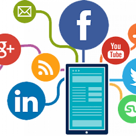
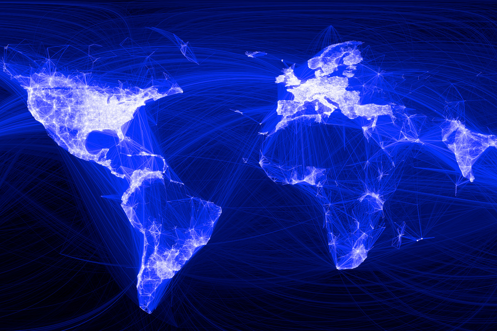
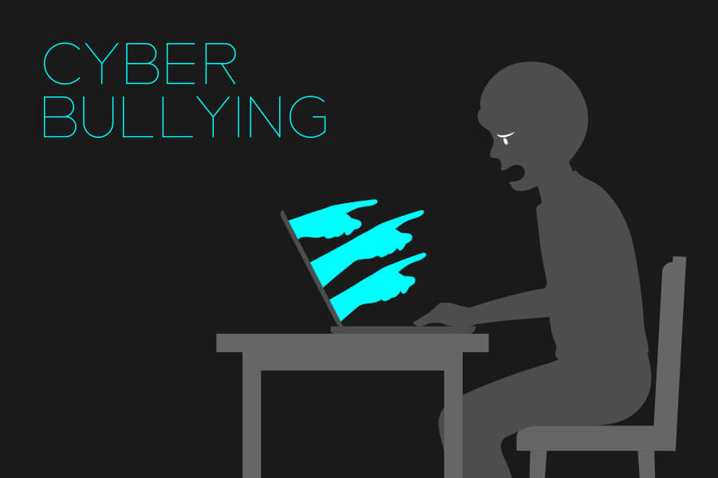
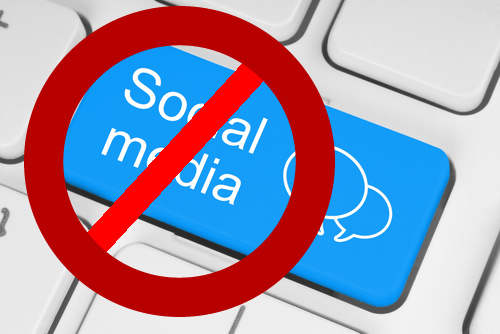

Is technology good or bad?
This is a long standing discussion that we, as a society, have pondered for the past few decades. It has been brought up in school, work, and even just while strolling outside. Here are some stats about social media throughout the past few years, and these have only been increasing.
Social media today has a multitude of advantages in everyday life. People are able to make keep long distance relationships going by texting and sending pictures back and forth. It serves as a easy way of communication and it allows one to make new friends through video games and other apps. Not only does it help individuals, but companies are also using social media in ways to boost business. Companies can use social media to post advertisements to help get recognition for their product/service. Around 50% of people claim that they use social media as their source of news rather than official news outlets because of its convenience and easy accessibility. Furthermore, people enjoy scrolling through their feed as a way of entertainment and to take a break during the day from work or school. Big social sites such as linkedin and indeed.com have helped many people find new job opportunities and get back to working.
With social media comes some drawbacks as well. One of the major problems with social media is that it has been used as a platform for harassment and bullying. Cyberbullying has grow with as social media has expanded because people feel “protected” when talking mean about some online versus saying it face to face. Fake news and lies can easily spread through social media which can ruin someone’s name, business, work, etc. Finally, many feel like that social media is causing important life skills to deteriorate, such as face to face interactions and keeping a conversation going. Some of these problems are trying to be eliminated such as cyberbullying and fake news.
Today cyberbullying is a hot topic that is being tackled by state officials, their have been stricter changes to the states bullying, harassment, and intimidation policies to help protect the victims. When used in moderation and appropriately social media can be a very effective tool. It helps people keep in touch over long distances, quick way of communication, and make/hangout with friends. Overall there are many advantages to social media and even though there are some drawbacks, when not overused or misused, the pros outweigh the cons.